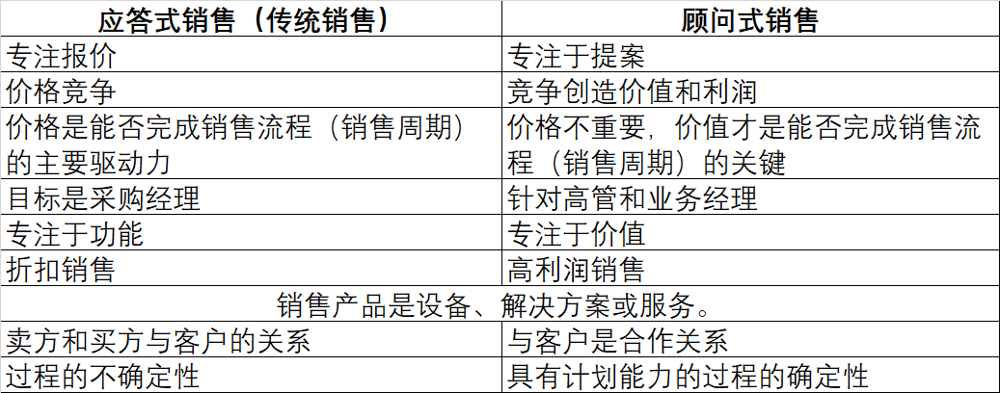

我认为顾问式销售这本书，针对销售人员，提供了特定并切实可行的成功方法和技巧，以实现更好地赢单。
就我个人而言，我意识到如果在对客户需求、挑战或策略一无所知的情况下进行销售，那么实际上在销售产品功能时是无法完整展示这些产品的真正附加价值的。
这本书提供了一些对应的技术和技巧来增强销售过程，并使之成为对客户和厂商都以价值为导向的过程。我认为在面对大多数客户都可以适用书中提到的不同风格的类似方法和技术。
以下是我从这本书中学到的一些经验点：
- 有意识地把“应答式”销售转变为“咨询式”销售。
- 让订单随业务和使用人员的节奏走，而不是供应商到采购商的节奏。
- 关注客户价值，关注我们能给客户提供的竞争力，而不是更低的价格。
- 销售重点聚焦于商业价值，而不是产品功能。
- 目标集中在业务用户和业务部门或单位，而不是采购和采购部门。
- 考虑如何为客户增加更多利润，而不是添加更多功能。
- 无论供应商做什么，都应该是以出售价值为主要方向。
- 需要建立规范值数据库，并根据业务类型了解我能为业务添加的规范附加值是什么。
- 业务线专用和业务功能专用，分为两大类； 1- 以利润为中心的业务线，2- 以成本为中心的业务功能
- 在以利润为中心的业务线中，销售应该专注于如何增加收入
- 以成本为中心的业务功能，销售应该专注于如何减少运营并提高成本节约。
- 在商业中，金钱只有一个目的：赚更多的钱
- 解决方案不仅是解决客户问题，还可以利用现有的客户业务，创造新的机会，这是一个抓住机会的系统工程。
- 定义解决方案以及如何在操作上能够落地。
- 把我们与客户的关系转变为合作伙伴关系。
- 更积极主动地融入客户，深入了解客户的行业、需求、痛点和价值，这样才能持续成长。
- 应该主动寻找可合作的客户。
- 引导客户告诉我们，他们的痛点和期望；如果他们不断询问未来的计划和解决方案，他们就是合作伙伴。
- 为了实现成功的合作伙伴关系，我们需要了解他们为什么需要合作，就他们投资后的回报而言。
- 要想实现成功的伙伴关系，就应该是双赢的伙伴关系，双方都应该双赢。
- 失去一位合作伙伴会引起怀疑、产生假设并引发焦虑，从而威胁到其他客户关系的稳定性。它将产生影响，为竞争对手利用这种情况打开一扇门。
- 失去伙伴关系的两个原因：
1.目标不同，伙伴关系的目标没有得到很好的跟踪，并且偏离了原来的目标
2.风险不均，风险不能靠伙伴关系消除，而应在伙伴之间降低、平衡和分担。 - 所有的商业运作都有一个流程，它们有开始、中间和结束。顾问式销售应该能够为每个过程中最关键的成功因素分配适当的成本，即贡献 80% 的 20%。
- 在资金流动之前，业务不会发生任何事情。需要关注资金分配到哪里。
- 需要为基于价值的销售创建三个信息数据库：
1.行业数据库，你服务的行业是什么。
2.客户数据库，你在每个行业服务的客户是什么。
3.客户的客户数据库，你的每个客户他们的客户都是谁。 - 这些数据库会让我们更好地了解客户以及他们与同行业其他客户相比的表现。如果客户低于标准，这意味着新的销售机会。
- 为了以最具成本效益的方式提出利润改进建议，有五个“必须知道”，经理和客户运营人员应该知道这些：
1.运营中最好的品种是什么，与竞争对手相比如何？来自运营经理
2.现在的运营 KPI 是什么？必须在多大程度上/多长时间内改进它们？来自运营经理
3.运营中的关键成功因素是什么？来自一线业务经理
4.经济附加值是多少？来自一线业务经理
5.经济附加值是多少？来自业务职能经理 - 关于金钱的经验法则是，今天的1块钱总是比明天的同1块钱更有价值，因为今天的钱可以在今天投资以赚取更多的钱。所以，我们应该专注于时间并更快地实现价值。
- 任何企业都可以通过五个原则赚钱：
1.流动资金
2.周转
3.边际贡献
4.投资回报率
5.回报 - 流通资本原则就是让最初的现金变成更多的现金：
1.初始现金是存货
2.存货转为应收账款。
3.应收账款转为现金完成一个周期 - 周转原则是衡量一个完整周期内流通现金的周转率。周转越快，利润就越大。那么我们的解决方案应该专注于如何加快这种周转。
- 贡献保证金原则是关于每个产品线或业务部门对客户总利润的贡献有多少。有两种方法可以做到这一点：
1.以当前的边际贡献率增加销量。
2.按当前销售量增加边际收益。 - 客户会根据我们提供的项目和解决方案的价值、数量、速度和确定性等标准来计算。
- “多少”标准可以通过净现值 (NPV)、投资回报率 (ROI) 和税后现金流来计算。
- “多快”标准可以通过投资回报来计算。
- “有多确定”标准可以通过回报的速度来衡量。
- 我们需要有这样的意识：我们不是在卖技术，也不是在卖针对客户业务问题的解决方案，例如“提高客户满意度”或“增加集成渠道”，而是在卖提高的利润。
- 这是因为客户将解决方案视为一种新资产，会消耗其部分资本，并且他们需要从对该资产的投资中获利。
- 销售的产品是提高的利润.
以下是我对传统的应答式销售（交易销售）和顾问式销售进行一点比较。
